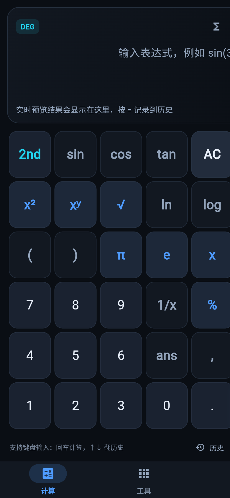

表达式计算
自研词法与递归下降解析，支持隐式乘法、幂运算右结合与 48 个内置函数；定积分、数值求导、求和连乘都能直接算。
Flutter · Web / Windows / Android
表达式计算、八个单位换算与十一项工程量计算，全部内置、离线可用；深色浅色随心切换，Web、Windows、Android 是同一套界面。

工具页里点开即用。下面是每个工具的实机截图，点开可以看大图；切换站点语言，截图里的界面也跟着换。
8 个单位换算 · 11 个工程量计算
计算器、工具页与设置页，全部是实机截图，语言与站点当前语言一致。
一个 App 覆盖从表达式到工程量的全部日常计算。
自研词法与递归下降解析，支持隐式乘法、幂运算右结合与 48 个内置函数；定积分、数值求导、求和连乘都能直接算。
长度、面积、容量、重量、温度、热量、压力、速度八个工具，按公制 / 英制 / 市制分体系，结果一屏列全，点一下即复制。
材料用量、建筑面积、混凝土构件、土石方、钢筋、砌筑、模板、屋面及防水、保温隔热、装饰装修与油漆涂料，按 GB/T 50854-2024 清单规则算。
引擎、字体、图标全部内置，运行时不请求网络，工地上没信号也能照常用。
默认深色科学计算器配色，浅色下同一套色相压暗；可以跟随系统，也可以手动固定。
每个工具都记住上次的数字与选项，输入停一下就存盘；常用工具可以置顶到最前面。
同一套代码，三个平台。
浏览器直接打开。构建产物自包含（CanvasKit 与字体都在本地），拷到内网服务器即可离线使用。
原生桌面窗口，物理键盘输入更快，适合和图纸一起开着用。
手机、平板随身带，APK 直接安装，工地上随手算。